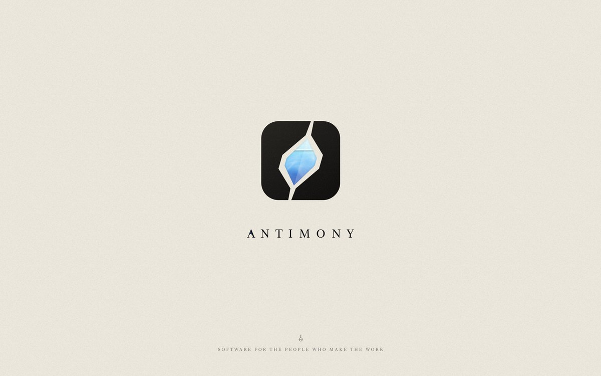
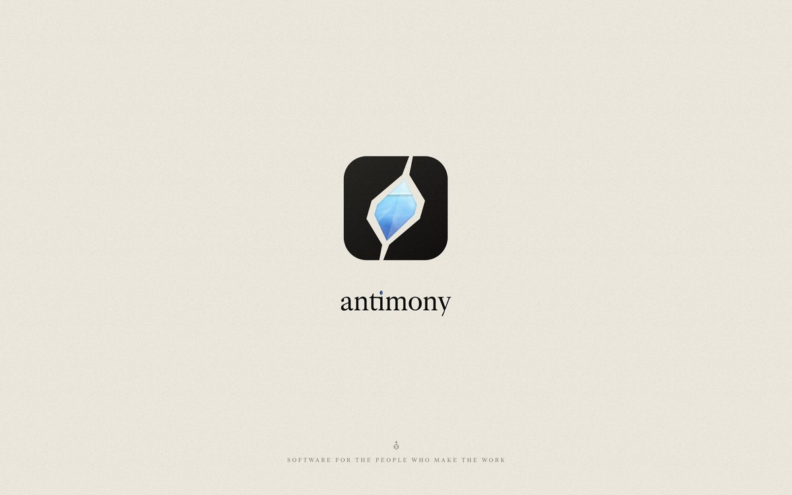
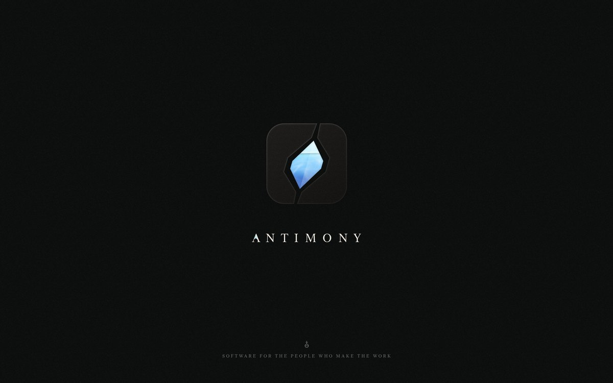
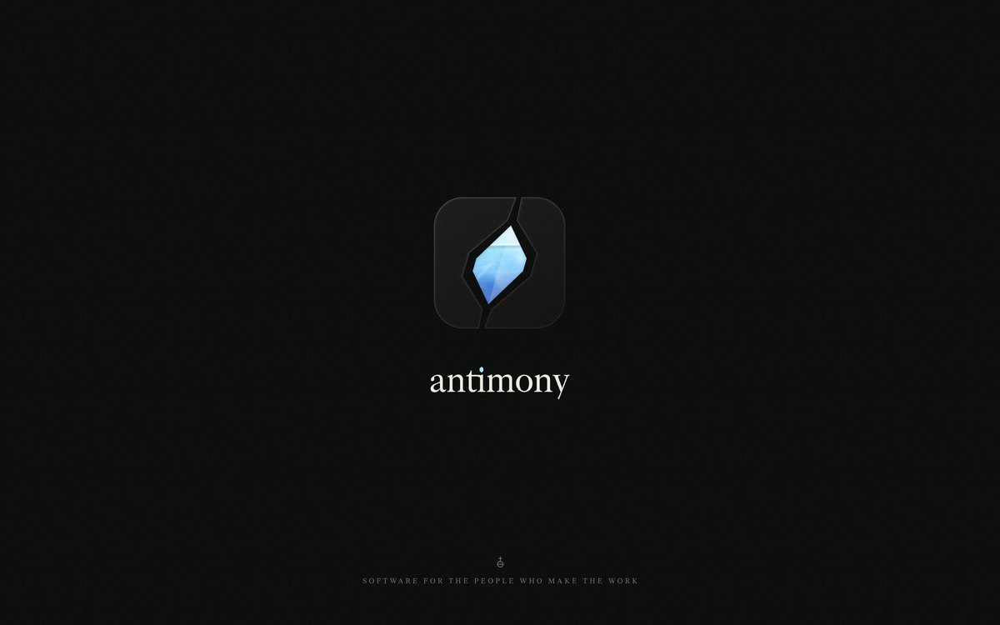
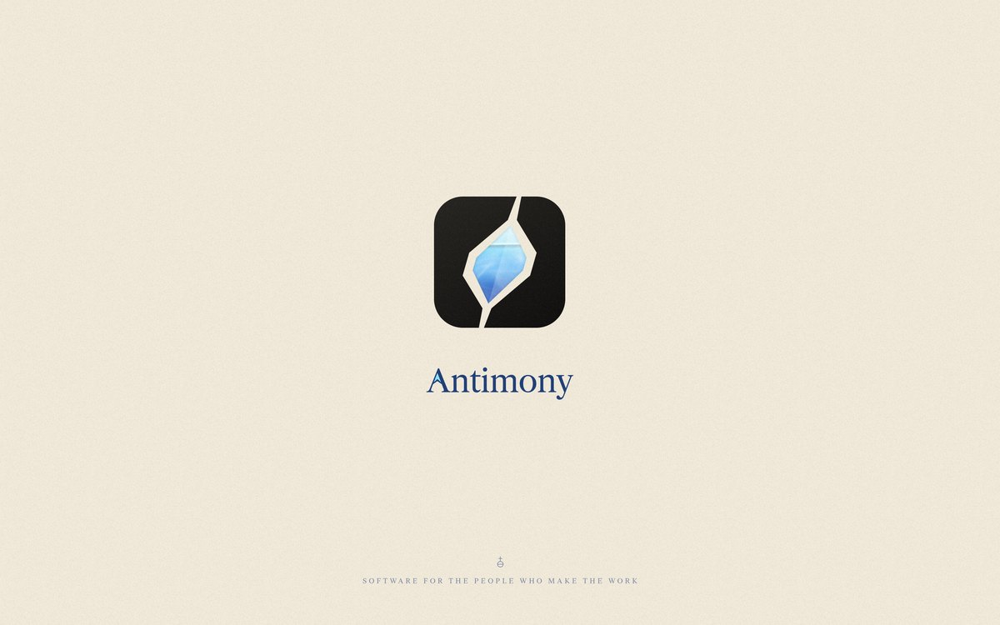
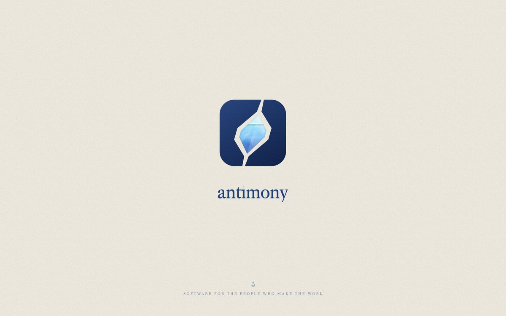
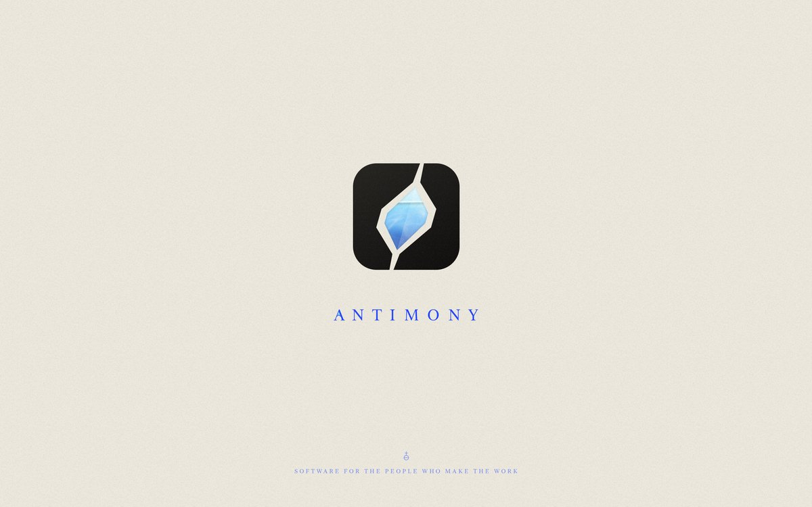
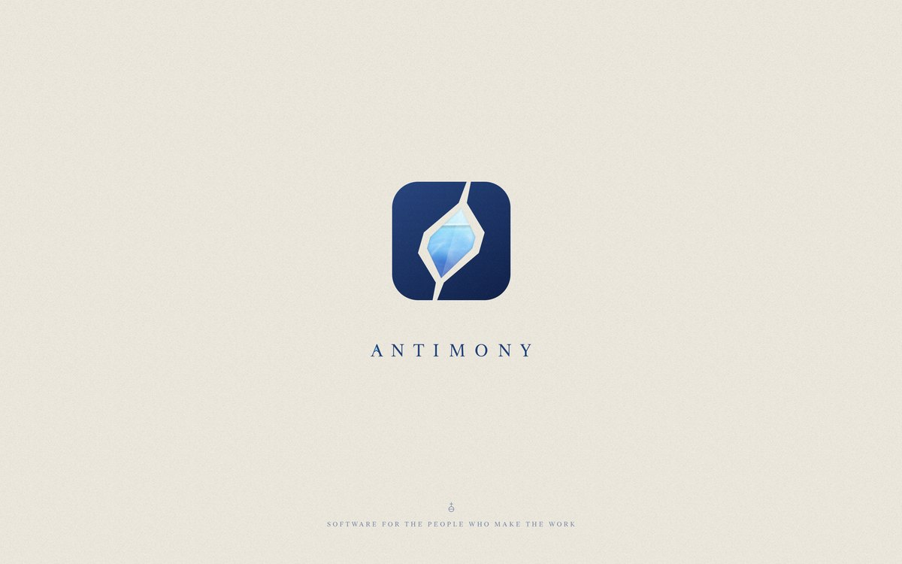

Capitals, paper: the default

Lowercase, paper: crystal tittle in Prussian

Capitals, night: stone lit at its edges

Lowercase, night

Title case, washi: Prussian type

Lowercase heavy, Prussian: the stone in Prussian

Capitals, cobalt: cobalt type and fractures

Capitals, Prussian